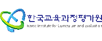

// 03
스마트시티 &
교육 네트워크
도심 교통관리, 공공와이파이, 교육청 백본 구축 등 시민 생활과 직결된 스마트 인프라를 설계·구현합니다.
12+건 수행

청주시 스마트시티 통합플랫폼 네트워크 구축2019–2020
청주시 ATMS 네트워크 유지보수2024–2025
청주시 스마트관광도시 공공와이파이 구축2024–2025
충북교육청 백본·L2스위치 전체 구축2022–2023
한국보건복지인재원 유무선 네트워크 구축2024–2025